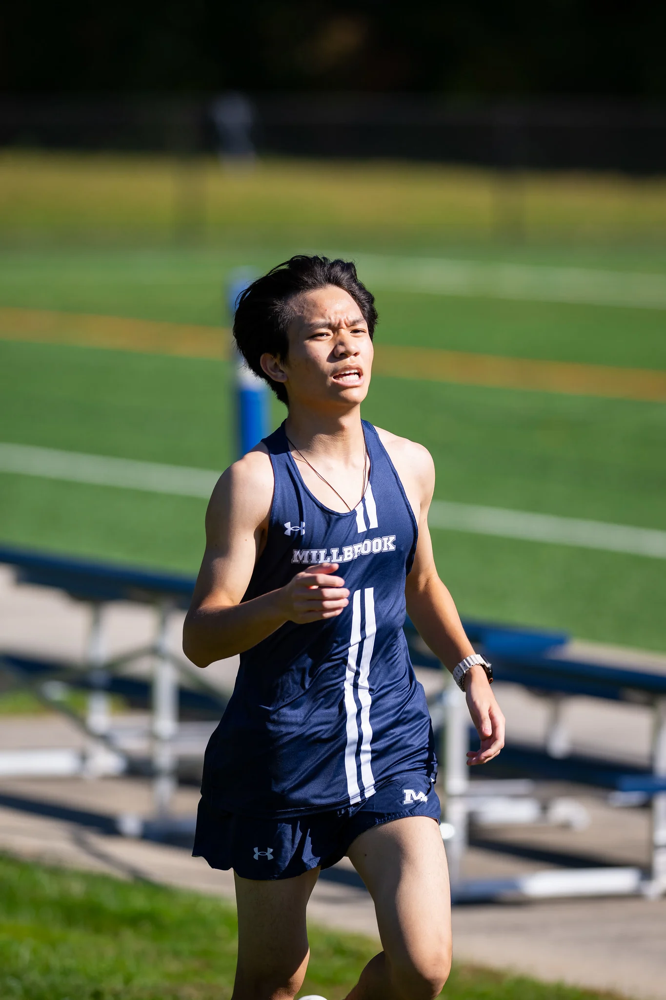
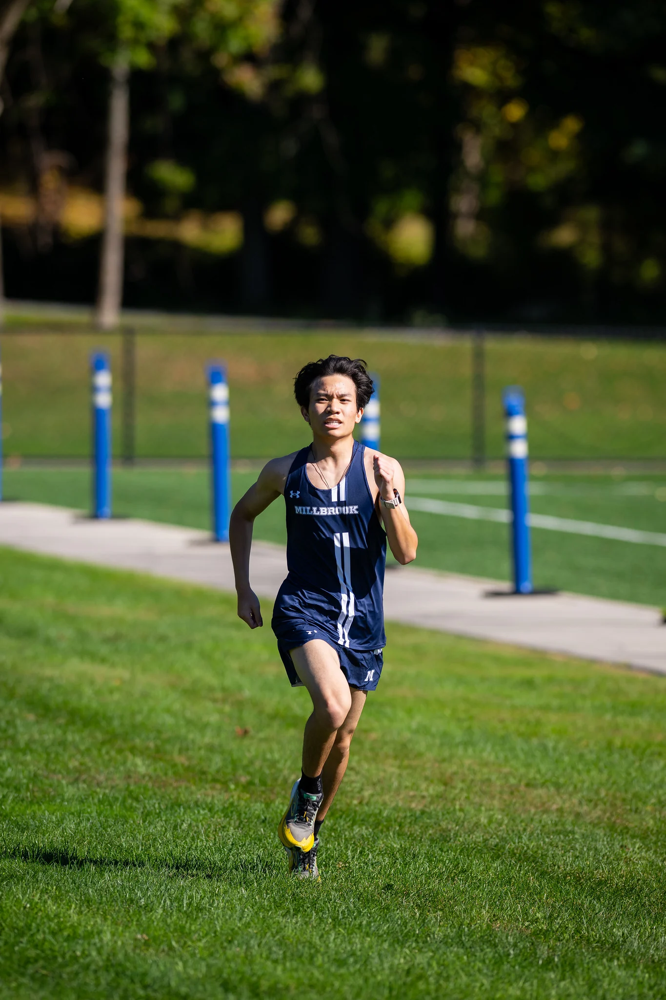
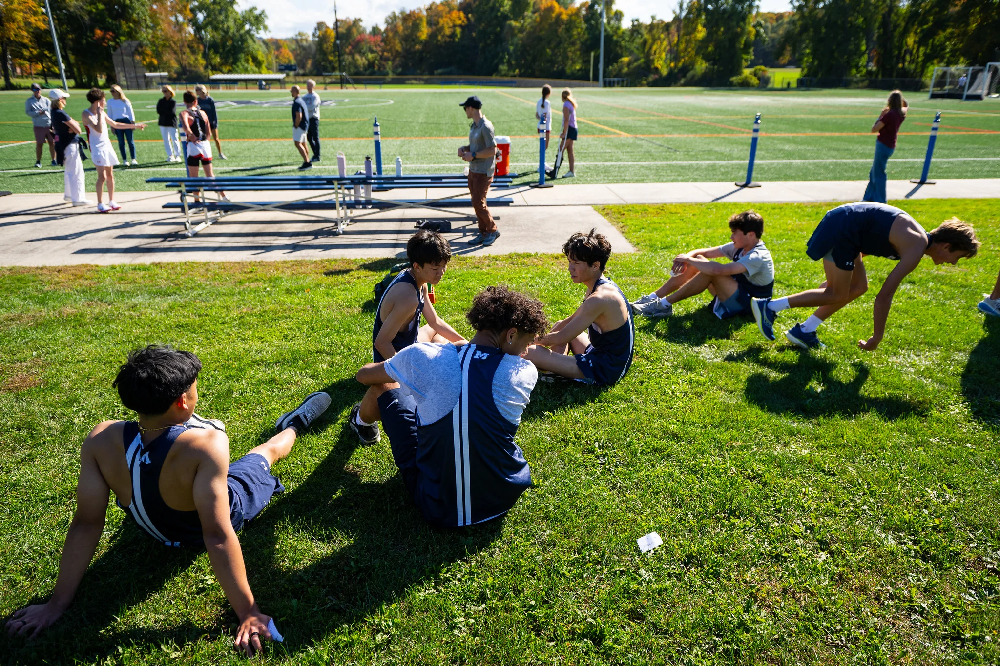
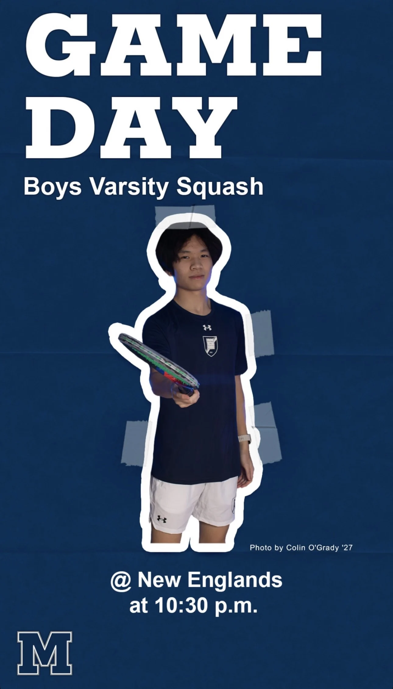

5K / Personal best
2024–202619:36min : sec
4:54 faster. 20% less time.
A comparison of two recorded personal bests.
03 / Athletics
Cross country, track, and squash at Millbrook. Personal bests, shared seasons, and time spent on the team.


5K / Personal best
2024–20264:54 faster. 20% less time.
A comparison of two recorded personal bests.
Varsity cross country

Grade 10
Grade 11
Varsity cross country
Championship participation
Track & field · 2024–2026
Advanced to the New England Preparatory School Track & Field Championships in Grade 10.

Varsity squash · 2025–2026
I contributed to our third-place team finish and competed against 15 schools and teams across the season.
Millbrook School Boys varsity squash